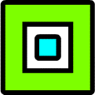
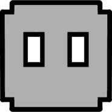

Geometry Dash
Disponível para: PC (Steam/Windows) e Mobile (iOS/Apple App Store, Android/Google Play Store, and Amazon Appstore)
Disponível para: PC (Steam/Windows) e Mobile (iOS/Apple App Store, Android/Google Play Store, and Amazon Appstore)
Geometry Dash é um jogo de plataforma rítmico índie desenvolvido pela RobTop Games. O objetivo do jogo é controlar um pequeno cubo e navegar por níveis cheios de obstáculos. Os jogadores devem pular, voar e evitar obstáculos para completar cada nível. O jogo é conhecido por sua dificuldade desafiadora e pela comunidade ativa que cria níveis personalizados.


